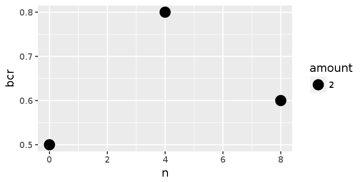

The file data/4/partab holds the information which parameters were used for which mapping run. By relating the output measures like sensitivity, specificity or balanced accuracy to these parameters, the influence of individual parameters can be assessed.
First step is to combine the output measures of all runs:
To this effect, to each of the .performance-files (contain sensitivity, specificity, bcr) generated in the last section, the run number is added as a separate column, then the .performance-files of all runs are concatenated to one table. Because the run number was added before, the origin of all values is still clear.
# Add the run number to each .performance file
for f in data/5/*.performance; do
i=$(basename ${f%.performance})
scripts/add_const_column "$f" runidx "$i" \
> "data/6/${i}.performance"
done
# Concatenate all tables, but print the header line only once.
scripts/cat_tables data/6/*.performance \
> data/6/performance
cat data/6/performance | column -tmap.true map.actl sensitivity nomap.true nomap.actl specificity bcr runidx
25 1 0.04 50 50 1 0.52 0
25 16 0.64 50 49 0.98 0.81 1
25 21 0.84 50 15 0.3 0.57 2
25 1 0.04 50 50 1 0.52 3
25 17 0.68 50 49 0.98 0.83 4
25 25 1 50 15 0.3 0.65 5Next, the parameter values belonging to the run indices are joined in, appending the parameter columns to data/6/parameters itself.
scripts/merge -a data/6/performance runidx \
-b data/4/partab runidx \
--all-a-cols --all-b-cols --all-a \
| scripts/write_later data/6/performance
head data/6/performance | column -trunidx map.true map.actl sensitivity nomap.true nomap.actl specificity bcr k n
0 25 1 0.04 50 50 1 0.52 2 0
1 25 16 0.64 50 49 0.98 0.81 2 4
2 25 21 0.84 50 15 0.3 0.57 2 8
3 25 1 0.04 50 50 1 0.52 10 0
4 25 17 0.68 50 49 0.98 0.83 10 4
5 25 25 1 50 15 0.3 0.65 10 8The value of one parameter can be plotted against some measure. The following command shows plots where the X and Y axis are free to choose. If multiple runs yield a similar score on the Y axis, their data points are merged to form one bigger dot on the plot. Here all numbers are rounded to one significant digit, because only 8 mapping runs are compared in this example. Therefore results must be aggregated coarsely to demonstrate the results.
# Plot n versus BCR
scripts/plot_parameter_effects --signif 1 data/6/performance n bcr \
--plot-format png \
fig/n.png
# Plot k versus BCR
scripts/plot_parameter_effects --signif 1 data/6/performance k bcr \
--plot-format png \
fig/k.pngView the plots:

It can be seen that n seems to have an impact on the BCR whereas k does not. The BCR rises and falls again because the gain in sensitivity is offset by the loss in specificity if n rises too high.
However, for the sake of simplicity, in this tutorial the number of reads to map is very small. To draw serious conclusions about the influence of mapper parameters, large numbers of reads must be mapped and statistical inference methods must be employed.